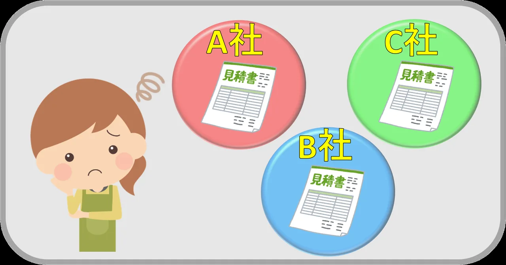
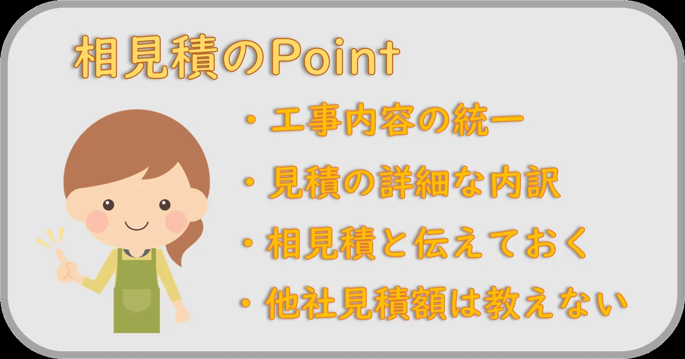

はじめに
例え必要な修理とはいえ、屋根修理にはかなりの費用が掛かります。
お客様目線で価格は1番気になる点だと思います。
大沼商会では相見積を推奨しますが、メリットだけではありません。
本記事では、相見積をする上でのポイントを抑えていきます。

相見積の取り方
- ポータルサイト経由で一括見積
一括で見積を取得できるポータルサイトがあります。そちらを利用するのも良いでしょう。
サイト運営の仲介業者がいるので、トラブルも防ぎやすいかと思います。
- 自分で調べて各業者に直接依頼
気になる業者は直接連絡してみるのがいいです。
業者側も一括見積で出すより、「気になってもらえた。」と、いい気分です。
業者がいい気分ってことは…何かメリットが…ありそうですね！！
相見積のメリット
- 相場がわかり、悪徳業者に騙されにくい。
単純計算3社中2社は同価格帯で1社だけ飛びぬけていたら、
何かしらの理由があるはずなので聞いてみましょう。
- 価格競争を生み、費用を抑えることができる
業者も契約が欲しいので少しでも安くして契約を取りたいものです
業者側も一括見積で出すより、「気になってもらえた。」と、いい気分です。
- 数社とのやり取りで信頼ができそうな業者の判断ができる。
現地調査や見積時のやり取りで雰囲気がわかります。そこで真摯な態度の方が信頼できます。
相見積のデメリット
- 低価格を提示してずさんな工事をする悪徳業者に騙される。
「このお客様は安ければ契約してもらえる」と利用される可能性もあります。
- 優良業者は価格では評価しにくい。
優良業者は価格競争しなくても決まった金額で最高のクオリティを提供します。
悪徳業者に騙されるとその後の修理も必要になり余計に費用が掛かります。
最初から適正価格の優良業者を選んだ方が絶対いいです。
- 着工までの時間と手間が掛かる。
何社にも依頼をして現地調査の立ち合いをして、見積書を貰い内容を確認する。
特に知識もないのにやるのは大変です。ただ大事な家の屋根のことなので、納得いく結果にしましょう。
相見積もりのポイント

- 工事内容を統一
部分修復やカバー、葺き替えなど単純に工程の違いや、使う材料の質・量によって金額は大きく変わるので、なるべく統一した方が比較しやすいです。
- 詳細な内訳を記載してもらう。
「工事一式〇〇円」だけの見積書の場合は、なんでその金額なのかがわかりません。
金額ではなく内容を書かないことが問題です。信頼性に欠けますね。
- 相見積を取っていることを伝える。
価格競争を生むにも大事なのですが、特に悪徳業者は高額な工事費を請求するつもりだったら、
相場を知られては請求できないのでリスクが減ります。
- 他社の見積金額は教えない。
せっかく価格交渉をしているのに値下げの幅を下げてしまいます。「他社の方が1万円安い」と言ってしまったら、3万円値下げできたのに1万5千円の値下げで止まる可能性があるので契約までは言わないようにしましょう。
最後に
最終決定は自分次第!!
もちろん大沼商会を選んでくださったお客様に後悔はさせません。
大沼商会で御見積依頼される際は、現地調査担当に施工への向き合い方を聞いてみてください。
屋根バカ集団の熱いプライドを感じると思います。
そんな大沼商会を是非ともよろしくお願い申し上げます。